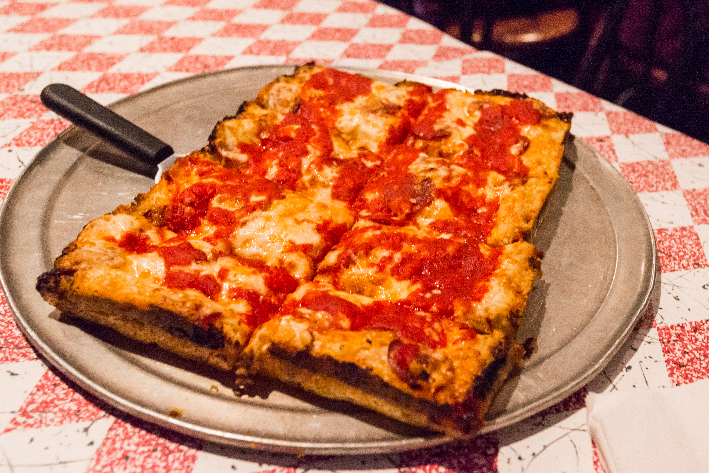

Detroit Style Pizza

Why should I make this?
Detroit-style pizza is a rectangular masterpiece of structural integrity that mocks your life's general instability.
You get a thick, airy crust and those crispy, caramelized cheese edges—a sensory experience far superior to the silence of an empty apartment.
You ladle the sauce on top like you're burying your problems in a deep-dish grave.
It's easy to bake, though the yeast will definitely judge your choices while you wait for the timer, which is really just counting down to the heat death of the universe.
Eat it before the birds realize you're vulnerable.
Ingredients
- 1 cup warm water
- 1 (.25 ounce) package active dry years
- 1 teaspoon white sugar
- 2 1/2 cups bread flour
- 3 teaspoons olive oil, divided
- 1 teaspoon kosher salt
- 1 (24 ounce) jar marinara sauce
- 2 teaspoons dried oregano
- 1 teaspoon red pepper flakes
- 1 teaspoon garlic powder
- 8 ounces shredded Monterey Jack cheese
- 4 ounces shredded mild Cheddar cheese
- 1 (8 ounce) package thick pepperoni slices
Steps
- Gather all ingredients
- Pour warm water into the bowl of stand mixer; mix in yeast and sugar and let dissolve.
- Add 2 teaspoons olive oil, salt, and bread flour. Knead mixture together with a dough hook attachment until dough is very smooth, soft, and elastic.
- Drizzle remaining 1 teaspoon oil onto a 10x14-inch Detroit-style pizza pan; use your fingers to spread oil over the bottom of the pan. Place dough in the center of the pan. Oil your fingers, then pull and stretch dough into a rectangular shape.
- Cover and let rise until doubled in volume, about 1 hour.
- Meanwhile, make the sauce: Bring marinara sauce, oregano, red pepper flakes, and garlic powder to a simmer in a saucepan over medium-low heat. Simmer for 15 minutes.
- Preheat the oven to 525 degrees F (274 degrees C). Combine Monterey Jack and Cheddar cheese into bowl. Toss lightly to mix together.
- Finish the dough: Rub fingertips with some olive oil from the pan. Press out air from the dough while stretching and pushing it into a rectangle that goes all the way to the edges of the pan. Stretch dough up the sides about 1/2 inch or so.
- Lay almost all pepperoni slices onto dough. Scatter cheese evenly over top, making sure to fully cover all the edges where dough meets the pan.
- Ladle sauce on top in three long strips. Arrange remaining pepperoni slices over top.
- Bake in the preheated oven until pizza is a bit darker than golden brown, about 15 minutes. Let cool for 5 minutes.
- Very carefully slide pizza onto a cutting board. Slice into rectangular pieces.
- Serve immediately and enjoy!
Home